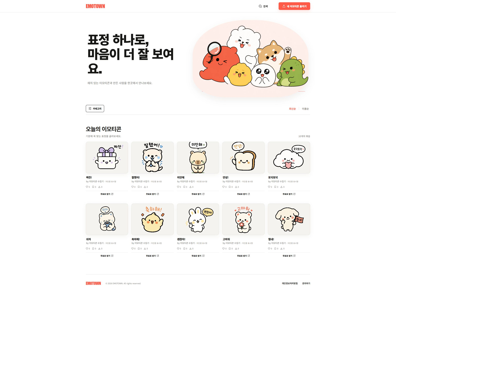
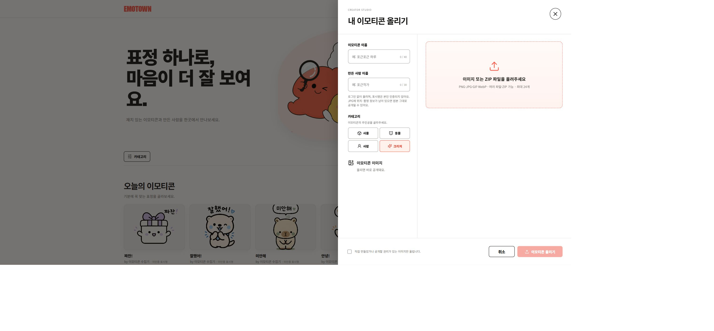

EMOTOWN은 이모티콘 묶음을 검색·카테고리·정렬로 탐색하고, 좋아요·찜·무료 다운로드와 제작자 업로드까지 연결하는 공개 웹 서비스입니다.
EMOTOWN
Overview
Problem
이모티콘 이미지가 개별 파일과 링크로 흩어지면 원하는 표정을 찾기 어렵고, 만든 사람과 묶음 단위로 공유하거나 내려받는 흐름도 분리됩니다. 탐색과 반응, 배포를 한곳에서 이어갈 공간이 필요했습니다.
Approach
표정 탐색에서 반응과 다운로드, 새 이모티콘 묶음 등록까지 같은 서비스 안에서 이어지도록 구성했습니다.
- 이모티콘 이름을 검색하고 사물·동물·사람·크리처로 필터
- 최신순·이름순으로 정렬하고 묶음별 제작자 표시명 확인
- 좋아요·찜·무료 다운로드로 이용 흐름 연결
- Creator Studio에서 이름·표시명·카테고리와 이미지 또는 ZIP을 등록
Screen evidence

